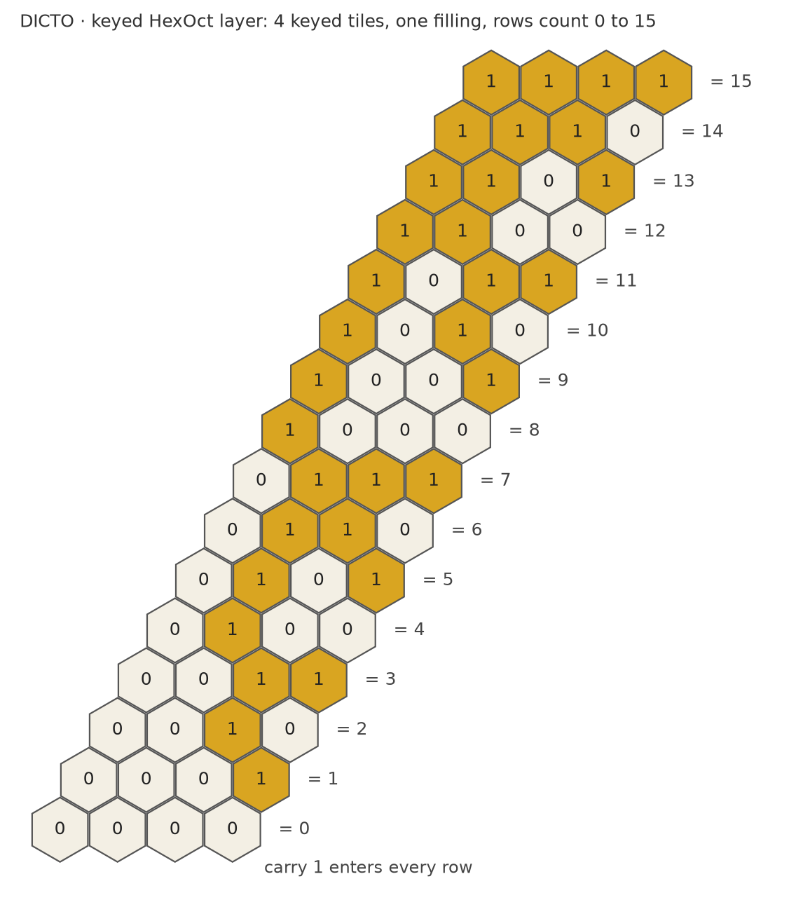

DICTO proposed that data could be built into HexOct configurations, the ways the tiles may connect setting the limits, as the basis of a new kind of programming language. On their own the two tiles carry one free choice per layer: any tile sits on any tile, so a stack is a string of c and h, a perfect store of bits that can never refuse a tile. To compute, a set of tiles must be able to refuse. That is what keys do: marks on the faces where tiles meet, with a tile allowed only where every key matches its neighbour's.
Where keys can go. We measured, for every tile, which neighbouring tiles share a face with it and how much face area each, in six stackings covering both tile types and mixed neighbourhoods (ABC, AB, ABAC both layers, ABABC, ABACBC) and five weights across the walk (λ = −2/5, −1/3, 0, 1/10, 1/4): points sampled on every face of every piece of the tile, pushed a hair outward, and looked up in the pieces of every tile within two layers; no face area was left unmatched. Three facts hold in every case. (i) Within its own layer every tile shares faces with its four neighbours along the lattice axes, (±1, 0) and (0, ±1), each face of area at least 0.28 (ball spacing 1), and with up to four more. (ii) Where the tiles meet on flat planes (λ ≤ −7/24), each tile touches exactly one tile above and one below, through the whole joint of area √3/2: the stack falls into columns. (iii) Where they interlock, each tile touches four to six tiles in the layer above and in the layer below.
Keys on the joints alone count, but cannot compute. With keys only on the joints between layers, a column of tiles is a string read once from bottom to top, each tile checking only the one below. Such a set of tiles accepts exactly the strings a finite machine with a fixed memory can recognise (a regular language): it can enforce patterns such as "no two h-tiles in a row", but it cannot count without bound or compute.
Keys on the side faces compute anything. Put keys on the four axis faces of the tiles of one layer, the other side faces left blank (one key that always matches). The layer is then a Wang tiling of the square grid: square tiles with marked edges, placed without turning, edges matching (Wang, 1961). Wang tilings can carry out any computation, the rows of a tiling being the successive steps of a Turing machine; and no general method can decide whether a given set of Wang tiles fills the plane (Berger, 1966; Robinson, 1971). Both statements therefore hold for keyed HexOct layers, at every weight of the walk, for c-tiles and h-tiles alike.

A layer that counts. The smallest working example uses four keyed tiles (Figure 14.3). An exhaustive search over windows of 3 × 8, 4 × 16 and 5 × 20 tiles found exactly one filling in each, and in each the rows count up in binary. Where the tiles meet on flat planes, the same four tiles can count up the stack instead, one number per layer, with the carry passing along the layer and each number handed to the layer above through the single joint (fact ii): the stacking itself becomes the clock.
What is known, and what was not found. Wang tiles and their computing power are classical (Wang, 1961; Berger, 1966; Robinson, 1971); tiles that compute by assembling themselves were made from DNA (Winfree, 1998), and three-dimensional tile assembly can simulate Turing machines (Cook, Fu and Schweller, 2011); Wang cubes have been used to build aperiodic material samples (Šedlbauer), and triangular and hexagonal tiles have been studied for self-assembly (Kari and others). Sources checked: these works; web searches for three-dimensional polyhedral tiles with matching rules and computation, and for close-packed stacking layers as tiles with keys or computation; and DICTO's reference library (7,730 passages) for Wang tiles and self-assembly, which returned the aperiodic monotile (Smith, Myers, Kaplan and Goodman-Strauss, 2023) and interlocking tetrahedron–octahedron blocks (Akpanya and others, 2024). We found no use of close-packed stacking layers, or of tiles built from their holes, as a medium for computation. The computing power here is Wang's; what HexOct adds is the geometry that makes it available: two tiles that fit every stacking, with axis faces of positive area in every layer, and one-to-one joints that make the stacking a clock.
Status. Keyed HexOct is a working name and a first study (2026-10-29): the contact measurements are sampled, not exact; the counting layer is checked exhaustively on the windows above. Open: keyed sets that use the interlocking joints, where each tile touches four to six tiles above.